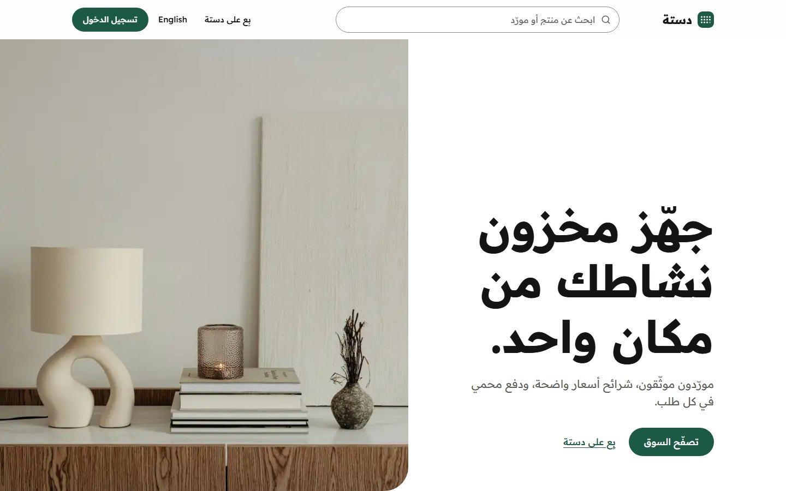
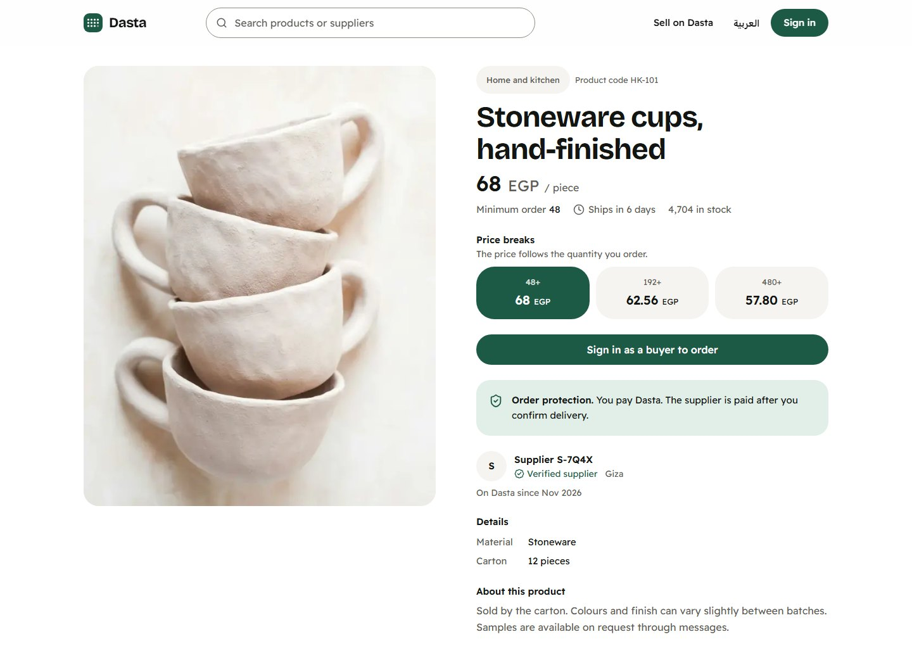
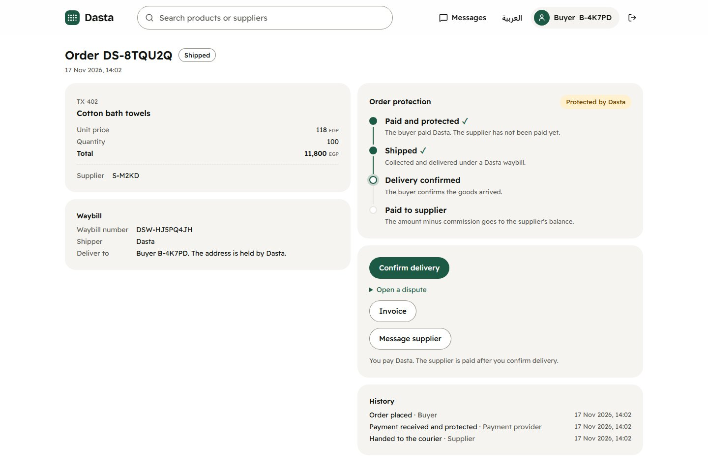
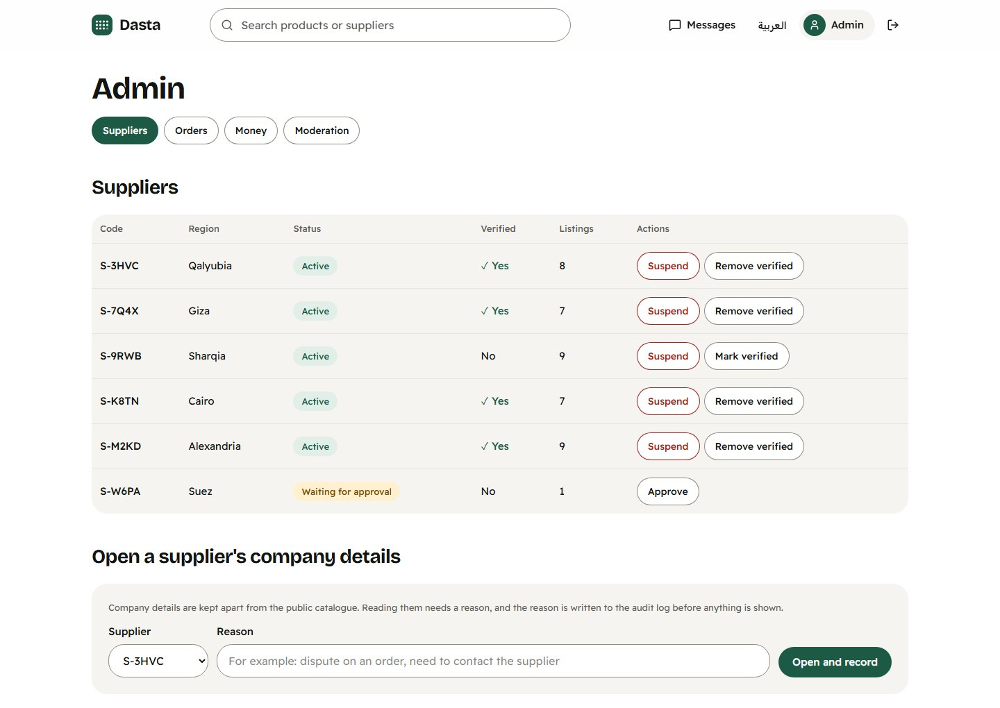
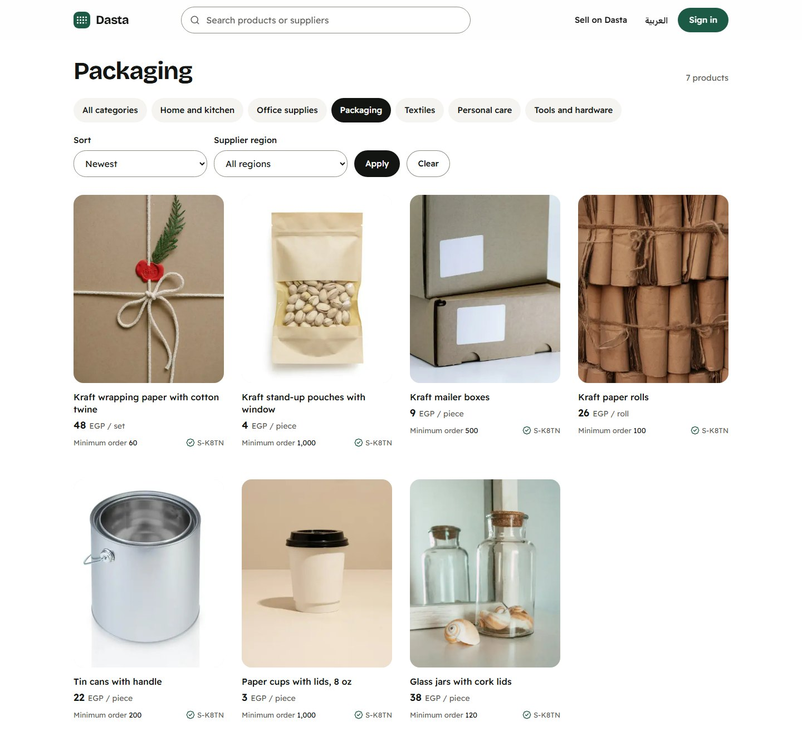
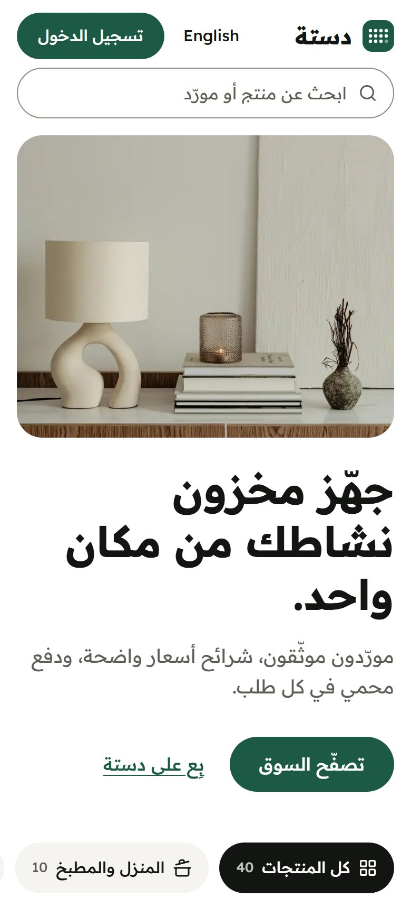
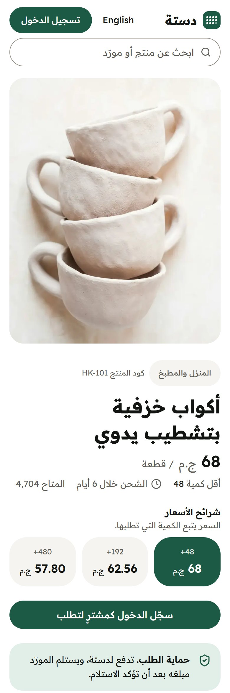

دراسة حالة · مشروع ضمن معرض أعمالي · 2026
دستة: سوق جملة بالعربية والإنجليزية.
«دستة» مشروع ضمن معرض أعمالي: سوق جملة يعمل فعلًا للمحلات والمقاهي والمكاتب، صمّمته وبنيته من أوله إلى آخره. مورّدون موثّقون، وشرائح أسعار حسب الكمية، ودفع محمي حتى الاستلام، ورسائل تبقى داخل المنصة. المورّدون والمنتجات والأسعار والطلبات بيانات نموذجية، والدفع يعمل في وضع الاختبار.
- النوع
- مشروع ضمن معرض أعمالي: سوق جملة متعدد المورّدين (B2B)
- الدور
- التصميم والبناء من أوله إلى آخره
- السنة
- 2026
- التقنيات
- Next.js, React, TypeScript, Tailwind CSS, shadcn/ui, GSAP, Supabase (PostgreSQL, Row Level Security), Vercel

ماذا يفعل
- ثلاثة أنواع من الحسابات، ولكل نوع شاشاته: المشتري والمورّد ومدير المنصة.
- كتالوج فيه 40 منتجًا نموذجيًا في ست فئات، مع بحث وتصفّح بالفئة وترتيب.
- شروط الجملة في كل منتج: الوحدة، وأقل كمية للطلب، ومدة التجهيز، وشرائح الأسعار. قاعدة البيانات هي التي تفرض أقل كمية وتحسب السعر، والمتصفح لا يرسل سعرًا أبدًا.
- عشرة منتجات على الأكثر لكل مورّد، والحدّ مفروض في قاعدة البيانات ويصمد حتى لو وصلت الطلبات في اللحظة نفسها.
- حساب المورّد يفصل البيانات العامة (الكود والمنطقة) عن بيانات الشركة (الاسم والهاتف والعنوان والحساب البنكي)، وكلٌّ منهما في schema مستقل داخل قاعدة البيانات.
- رسائل بين المشتري والمورّد بتحديث مباشر، مع فحص لبيانات التواصل: أرقام الهواتف بالأرقام اللاتينية والعربية، متباعدة كانت أو مكتوبة بالحروف، والبريد الإلكتروني والروابط وأسماء الحسابات. ولمدير المنصة قائمة مراجعة ونظام إنذارات.
- أدوات مدير المنصة: اعتماد المورّدين، وفتح بيانات الشركة مع تسجيل السبب، والنزاعات، وصرف المستحقات، والعمولة.
- بالعربية والإنجليزية مع اتجاه من اليمين إلى اليسار، ومصمَّم للهاتف أولًا.

الدفع المحمي
المشتري يدفع لدستة لا للمورّد. والطلب يمرّ بخطوات ثابتة: مدفوع ومحفوظ، ثم مشحون، ثم تأكيد الاستلام، ثم صرف المبلغ للمورّد بعد خصم العمولة؛ أو استرداد، أو نزاع. وكل حركة مالية تُقيَّد في دفتر بالقيد المزدوج لا يمكن تعديله.
الدفع يعمل في وضع الاختبار عبر مزوّد دفع محاكى (mock) يرسل إشعارات موقَّعة (signed callbacks) بنفس شكل إشعارات Paymob، وكل إشعار يُطبَّق مرة واحدة على الأكثر. لا يُخصم شيء من أي بطاقة، ولا تتحرك أموال حقيقية.


التصميم
- صفحة بيضاء بأسطح فاتحة دافئة، وعناوين ثقيلة، ولون أخضر عميق واحد، وصور طولية بلا إطارات.
- صفحة رئيسية مُخرَجة كالمشاهد: افتتاحية واحدة، ثم مشهد ثابت تتحرك فيه الفئات أفقيًا مع التمرير (ويُعكس اتجاهه في العربية)، ثم شاشة أخيرة مصمَّمة. أما صفحات العمل فتبقى ساكنة وسريعة.
- الحركة تتوقف لمن يفضّل تقليل الحركة، والصفحات تعمل وJavaScript معطَّل (الاستثناء الوحيد شاشة «الصفحة غير موجودة»).

كيف تُحفظ بيانات المورّدين
- بيانات الشركة في schema لا تملك جلسة المشتري ولا جلسة المورّد أي صلاحية عليه في قاعدة البيانات.
- Row Level Security على كل جدول، والصفحات تستعلم من قاعدة البيانات بجلسة الزائر نفسه.
- مدير المنصة لا يفتح بيانات الشركة إلا عبر دالة تكتب في سجل المراجعة أولًا.
- الصور يُعاد ترميزها على الخادم، فتُحذف منها بيانات الكاميرا وموقع GPS.

الدليل
- 130 اختبارًا لقاعدة البيانات و97 اختبارًا للوحدات، واختبار زحف يفتح كل صفحة بستة أنواع من الزوّار.
- الحقول الخاصة في البيانات النموذجية تحمل علامات، والاختبار يفشل إذا وصلت أي علامة إلى مشترٍ أو إلى مورّد آخر، عبر جدول أو دالة أو صفحة أو header.
- Lighthouse 12 على الصفحة الرئيسية للموقع المنشور، بإعدادات الهاتف، يوم 17 نوفمبر 2026، 15 تشغيلًا لكل لغة: إمكانية الوصول 100 وأفضل الممارسات 100 في كل تشغيل، والأداء من 90 إلى 99، ووسيط LCP يساوي 2.29 ثانية بالإنجليزية و2.43 ثانية بالعربية (المدى من 1.88 إلى 2.67 ثانية).
- فحص آلي لإمكانية الوصول (axe، معايير WCAG 2.1 A و AA) على ستة أنواع من الصفحات باللغتين: بلا أي ملاحظات. وهو فحص آلي فقط: لم يُستخدم قارئ شاشة ولا هاتف حقيقي.
ما لا يدّعيه
- ليس نشاطًا تجاريًا قائمًا: لا أموال حقيقية، ولا مورّدون أو مشترون حقيقيون. والبيانات تُعاد إلى حالتها الأولى كل ليلة.
- قواعد حفظ أموال المدفوعات والضرائب والفواتير في مصر لم تُراجَع.
صفحة «عن دستة» (تفتح في تبويب جديد) في الموقع توضّح ما هو بيانات نموذجية وما هو وضع اختبار، ومن صفحة تسجيل الدخول (تفتح في تبويب جديد) يمكنك أن تتجوّل في الموقع بحساب نموذجي.
شاشات أخرى





تواصل معي
تحتاج نظامًا مثل هذا لمشروعك؟
اكتب لي في سطرين عمّا تريد أن تبنيه، بالعربية أو الإنجليزية.